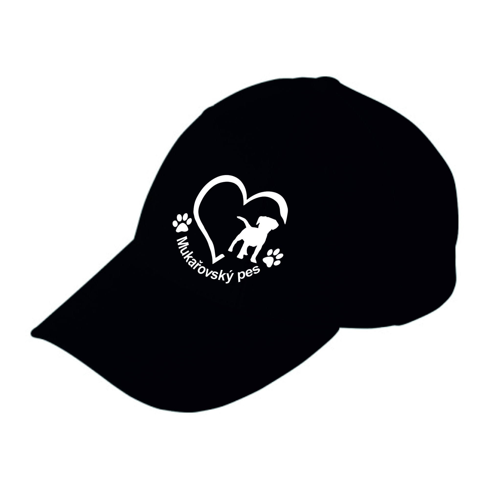
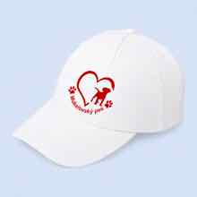

🐶
Představení parťáka
Soutěžící napsali do komentáře jméno svého psa.
Facebooková soutěž o bílou a černou kšiltovku skončila 30. září 2026 ve 20:00.

Soutěž probíhala od zveřejnění soutěžního příspěvku 21. září do 30. září 2026 do 20:00.
Soutěžící napsali do komentáře jméno svého psa.
Přidali oblíbenou podzimní aktivitu nebo tip na výlet se psem.
Volbu barvy uvedli na konci komentáře slovem nebo symbolem ⚪ pro bílou či ⚫ pro černou.
Účastníci si mohli přečíst příspěvky ostatních pejskařů.

Podle pravidel připadla na každou barvu jedna výhra.
Zapojení je zdarma a není podmíněno nákupem ani sdílením příspěvku.
Soutěž není žádným způsobem sponzorována, podporována, spravována ani spojena se společnostmi Instagram, Facebook nebo Meta. Účastník tyto platformy zcela zprošťuje odpovědnosti související se soutěží.